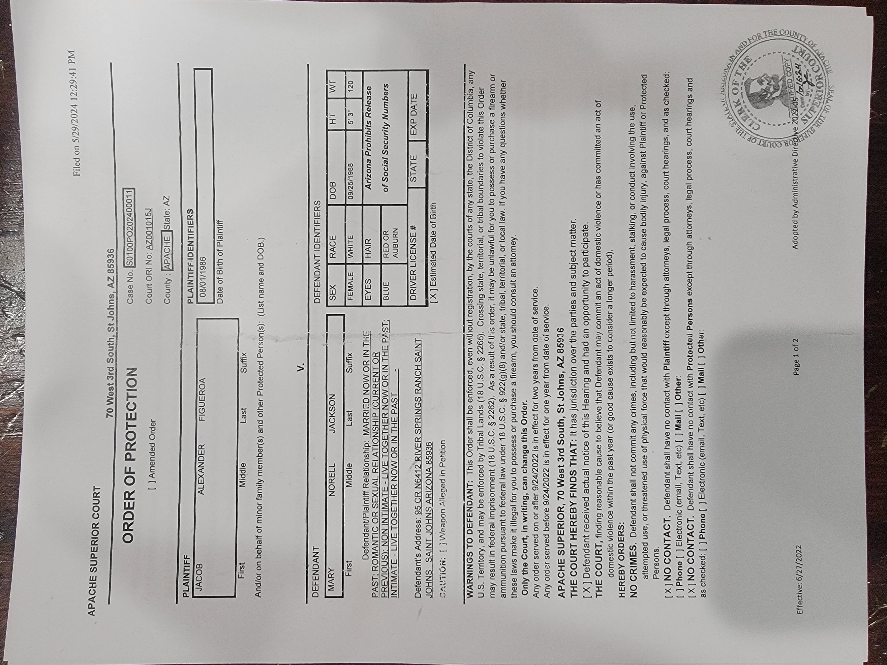
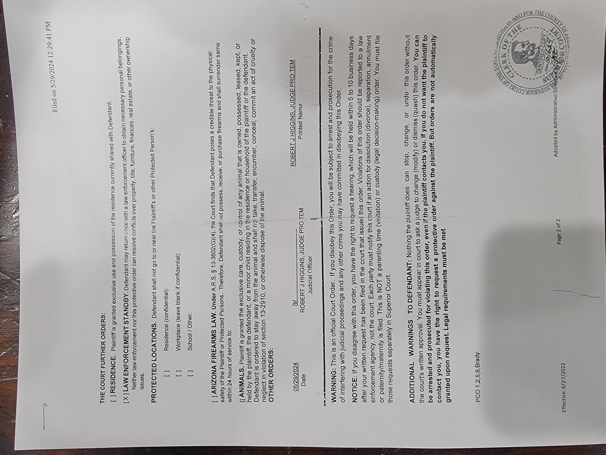

This case involves a series of disputes, court proceedings, and enforcement issues arising from my separation with my ex-partner. The matters span multiple courts, judges, and agencies, and include both civil and criminal components. Key issues include enforcement of court orders, ownership of animals, property disputes, defamation, and allegations made against me.
Orders for Protection (OFP): I was granted an OFP with law enforcement standby. Despite this, violations occurred without judicial enforcement.
Minute Orders: Judge Butch Gunnels initially authorized retrieval of my dogs and lifted Brady restrictions, but later reversed his decision without legal reasoning.
Law Enforcement Non-Compliance: Sheriffs and constables refused to enforce court orders, citing need for County Attorney approval.
Pre-Trial and Trial: The vacated case was reopened, leading to misdemeanor charges prosecuted by Brett Rigg. Evidence lacking metadata and integrity was admitted, and Judge Jay Yellowhorse presided after Judge Gunnels was unavailable.
Appeals and Complaints: I filed complaints against multiple judges for misconduct and appealed rulings. Judge Whiting struck motions from the record, and Brett Rigg attempted to exclude medical evidence of injuries sustained from my ex’s assault.
Defamation: My ex published defamatory posts and videos on Facebook, which remain publicly accessible.
Animal Ownership: Disputes over my Doberman Zelda and her litters resulted in financial losses and welfare concerns, with my ex selling litters without sharing proceeds.
Civil Lawsuit: In September 2024, my ex filed a lawsuit alleging sex trafficking, rape, and attempted murder, demanding $50,000 and property transfer. The judge dismissed the lawsuit.
Contradictory Testimony: My ex made inconsistent statements in court and on body camera footage, undermining her credibility.
Closing Statement: At trial, her only request was that I sign over property to her.
Overall, the case reflects repeated contradictions, enforcement failures, and dismissed claims, alongside ongoing disputes over property, animals, and reputation.
Timeline of Incidents
Los Angeles: Nose broken after repeated punches.
Los Angeles: Jaw injury from metal object, cracked tooth.
Arizona: May 8th 2024 Rock thrown at ankle, ER visit, medical boot.
Arizona: May 2024 High-powered flashlight shined into eye.
Arizona: The week before, she pulled a loaded 9mm handgun with hollowpoint ammunition.
Arizona: While out driving for DoorDash, I called her because my ankle was swelling and I needed to go to the hospital. She hung up on me, did not return my calls, and instead went to Bo Hounshell’s house.
Relevant Individuals: Bo Hounshell is the son of Brian Hounshell (charged with 11 felonies and former detective) and Annelle Hounshell (court clerk).
Apache County: The next evening I received a phone call from the Apache County Sheriff’s Office informing me she had been arrested and was in jail with two dogs and the Jeep. Deputies came to my ranch to explain. I recounted the incidents (rock thrown at ankle, gun pulled). They said she had played an audio recording that incriminated her for assault, leading to her arrest. While at the ranch, I offered them water but was standing down the driveway due to my medical boot. I asked for a ride up; they told me to get in the back of their truck. Once inside, they asked for my wallet and phone and then arrested me.
Body Camera Footage
Both parties were arrested and placed in jail. However, the body camera recordings show a discrepancy:
Her testimony was recorded, but her arrest was not.
My arrest was recorded, but my testimony was not.
This discrepancy is confirmed in the body camera footage and may be relevant to the case.
Post-Release Events
After I was released from jail, several issues occurred:
It took 3 days before I was given medical care, despite being in a medical boot and reporting pain.
I was allowed to return home, but a mutual friend warned me she would lie to police and claim I beat her if I went back to the property.
On the friend’s advice, I avoided returning to the property.
Without a way to charge my phone, with no money (card declined for insufficient funds), and no shoes, I had to stay in a hotel.
The local church assisted me with lodging during this time.
Order for Protection (OFP)
I called the sheriff and explained the situation. He advised me to press charges or file for an order for protection.
At that time, I did not want to press charges but I did file for an OFP.
A few days later, while staying at a hotel, I was served by Constable Lance Pearce with an OFP that Mary had filed and received without a trial.
My own OFP filing was scheduled for a hearing date.
Court Orders and Outcomes
At the trial disputing her OFP claims, Judge Butch Gunnels dismissed the charges in a minute order entry, vacating the case.
The judge lifted the Brady restriction.
A subsequent minute order entry authorized me to retrieve my dogs with proof of ownership.
I had a hearing for my own OFP in Superior Court, which was granted.
The OFP included a law enforcement standby provision.
As a result, I now had:
An OFP granting law enforcement standby.
OFP Evidence Photos

OFP Document 1

OFP Document 2
A minute order entry to retrieve my dogs and personal belongings.
The Brady restriction lifted, allowing me to retrieve my firearms from the sheriff’s office.
Non-Compliance with Court Orders
Despite having all the paperwork authorizing retrieval of my dogs, the sheriff refused to take me to the property. The constable also refused.
The sheriff’s office refused to return my firearms, even after the Brady restriction was lifted.
Each official cited the same reason: they required approval from the County Attorney before obeying the judge’s orders.
The County Attorney at the time was Michael Whiting.
Dog Ownership Proceedings
I filed a motion for a status conference with the judge who issued the Order for Protection.
I also requested a hearing with the judge who issued the minute order entry authorizing retrieval of my dogs with proof of ownership.
Evidence provided to the Justice Court included:
Bills of Sale for both Zelda and Zion.
Veterinary records.
Bank statements showing deposits from puppy sales.
A statement from one of the breeders, accompanied by her driver’s license.
Judge Butch Gunnels later stated he had changed his mind about the dogs but issued no legal reasoning for this reversal.
Pre-Trial Proceedings
After receiving a date for my status conference with Judge Robert Higgins in Superior Court, I was served papers requiring me to attend a pre-trial.
The pre-trial involved two misdemeanor charges.
The case was led by Brett Rigg.
The previously vacated case was reopened immediately before my status conference in Superior Court.
Defamation and Social Media Evidence
My ex made defamatory posts on her personal Facebook account.
A friend sent me screenshots of these posts, which I printed out for documentation.
She also edited together a video defaming me and published it on the band’s Facebook page:
facebook.com/thebandfamous
The video remains publicly available on that page to this day.
Doberman Zelda and Breeding Issues
Zelda, my Doberman, was 4 years old during our separation and pregnant with her 4th litter.
I intended to retire her and have her fixed after that litter.
My ex sold the entire 4th litter, kept all the money, and did not share or send any of it to me, despite me being the business owner.
She bred Zelda again and sold another litter without my involvement.
Zelda is now pregnant again with her 6th litter.
Evidence: Zelda’s 6th Litter
A Facebook photo documents that Zelda is pregnant with her 6th litter.
This supports my claim of negligence and contradicts her statements about responsible care of the animals.
Evidence: Instagram Posts (Eden's Fruit Ranch)
The Instagram page Eden's Fruit Ranch contains posts verifying that Zelda gave birth to one of her litters under a trailer.
She admits on the page that Zelda escaped her care.
These conditions are unfit for a reputable dog breeder, as baby puppies should not be born in the dirt under a trailer.
This evidence supports claims of negligence and improper animal care.
Bench Trial Proceedings
The pre-trial was rescheduled four times before eventually proceeding to a bench trial.
I was offered a plea deal: plead guilty, keep my record clean, and complete an online anger management class.
I refused the plea deal, stating I was innocent, and the case went to trial.
Evidence admitted included:
A photograph lacking metadata.
An audio recording that was a recording of a recording, taken from body camera footage.
Judge Butch Gunnels was unavailable for the trial, and Judge Jay Yellowhorse presided instead.
Attorney General Involvement
I contacted the Attorney General’s Office regarding the ongoing matters.
This included the issue of Constable Lance Pearce canceling my civil standby permanently via text message.
Constable Pearce claimed the civil standby was “off” from that point forward.
OFP Violations
August 8, 2024: My ex came to my apartment in Pinetop, AZ around 9 PM. She was seen by my neighbor in the parking lot near my door. I provided his statement to the court.
October 16, 2024: I attempted to retrieve personal belongings with probation officers. My ex was not present at the property. When contacted by phone, she:
Threatened the probation officers with trespassing charges and arrest.
Questioned the validity of my papers, claiming they were fake.
This constituted a second violation of the OFP that had been granted to me.
When I raised these violations in court at the status conference, Judge Robert Higgins took no action against her.
Contradictory Testimony
In body camera footage, she stated that I would never hurt my animals.
In court, she claimed that I beat the animals and used this claim as a reason not to return my dogs.
Despite those claims, in the same court hearing she agreed to give me back the last puppy from one of the litters.
This contradiction between her body camera statement and her court testimony is documented.
Unusual Claims
In body camera footage, she claimed that aliens took her knife and returned it three months later.
Civil Lawsuit
In September 2024, she filed a lawsuit against me.
Her claims included:
Accusations of sex trafficking.
Accusations of rape.
Accusations of attempted murder over a 13-year period.
Accusations that I was trying to steal all her possessions.
She demanded $50,000 and that I sign over the shared property to her.
The judge dismissed the lawsuit.
Class Action Lawsuit Claims
In court, she claimed that I would be fine because of a class action lawsuit that she had attained.
In reality, the class action lawsuit includes both of us, with both of our names listed on it.
This demonstrates another false statement made in court.
Complaints and Appeal Proceedings
The Attorney General’s Office referred me to the Arizona State Bar. The State Bar refused to investigate Brett Rigg, despite his prosecution relying on asymmetrical body camera footage and evidence lacking metadata.
The Attorney General’s Office also referred me to the Arizona Ombudsman-Citizens’ Aide, but they stated they could not help. They referred me to the Arizona Commission on Judicial Conduct.
I filed four separate complaints against judges:
Judge Butch Gunnels: Told me to “shut up” in court and changed his mind without legal reasoning on his minute order entry.
Judge Robert Higgins: Failed to address the ranch issue despite stating he would at a status conference, and failed to enforce two violations of my OFPs.
Judge Jay Yellowhorse: Allowed unverified evidence (photo without metadata, audio recording of a recording) to proceed to trial.
I filed an appeal. Judge Whiting struck from the record several motions I had filed legally.
During the appeal, Brett Rigg attempted to strike all medical records I submitted, including documentation that I suffer from:
Complex Regional Pain Syndrome (CRPS) from her assault.
A bilateral septum break from her punching me.
In trial, Brett Rigg stated I only suffered an ankle sprain and downplayed her punching me in the face, despite her admitting to it on the stand.
Closing Statement
At the end of the trial, the judge asked Mary Jackson what punishment or outcome she wanted to see imposed on me.
Her only request was that the judge make me sign over the property to her.
This was her closing statement in the trial.
Evidence
Upload or link to documents, photos, or other materials relevant to your case.
{kind=link}